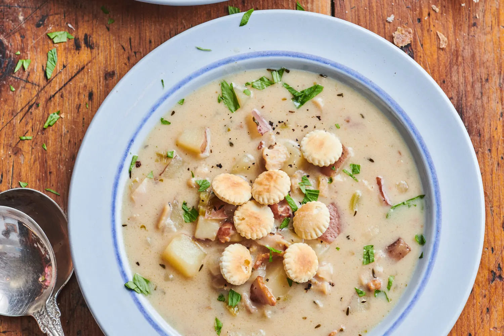
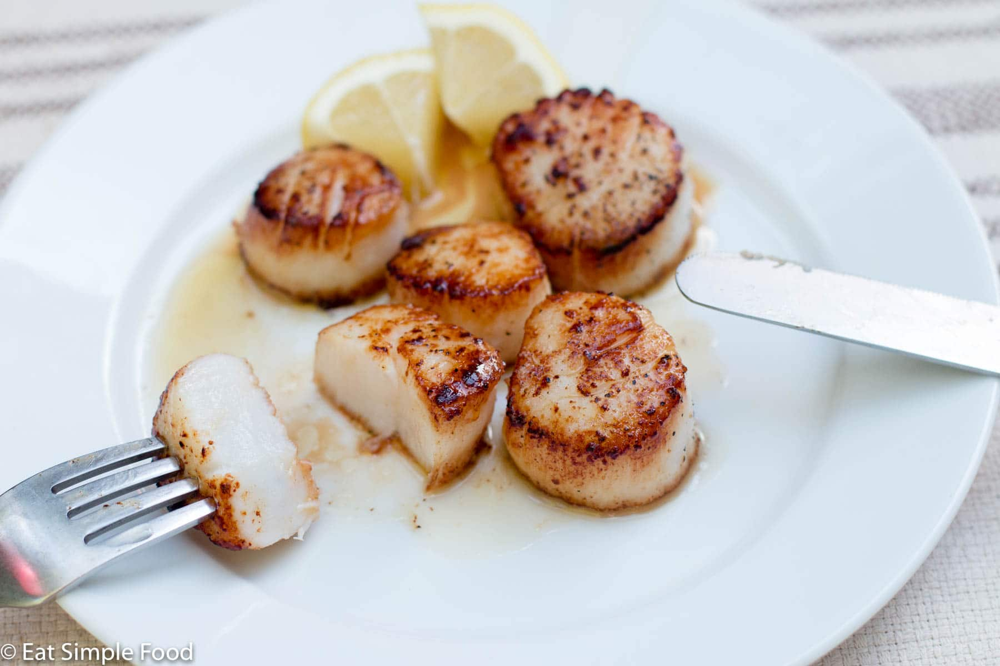
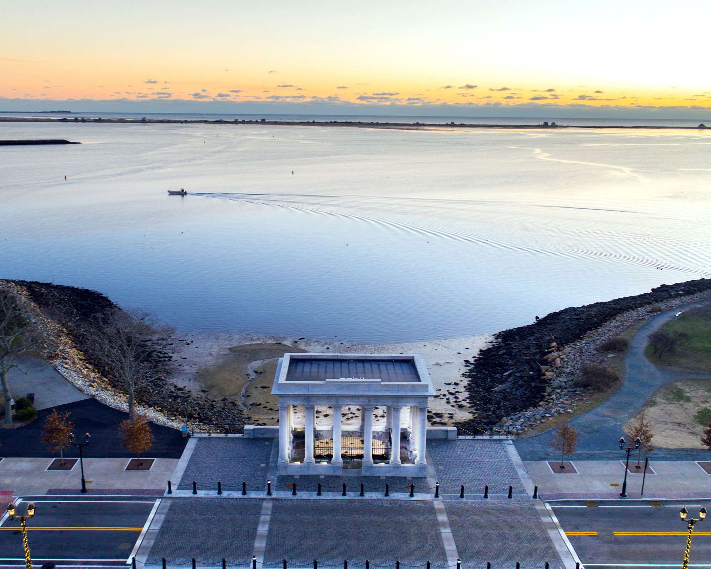
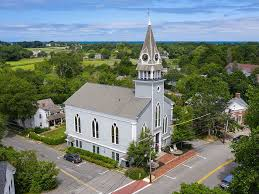

Restaurant History
The Wharf was built and opened in the summer of 1984 on the coast as a place for families and friends to meet and gather over good food and good views.
 The restaurant became a staple in the community and since has expanded its locations and has been passed through the family for generations.
Town Histories
Plymouth, Massachusetts Location
Plymouth, Massachusetts was founded in 1620 and is a historical site for the Mayflower, these individuals were known as separatists from England. The land in which the restaurant resides was less than a half mile away from the landing site and Plymouth rock which are still available for individuals to tour and see today only minutes from the restaurant.
 Sandwich, Massachusetts Location
Sandwich, Massachusetts was founded in 1637 by Edmund Freeman the 2nd and is the oldest town in Cape Cod. They were an early site for a Quaker settlement and still continue this tradition today. They’re most known for the trading, fishing, and agriculture the town and land provided for the community.